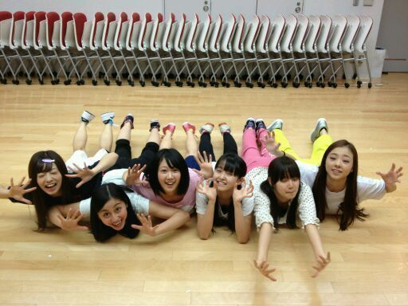
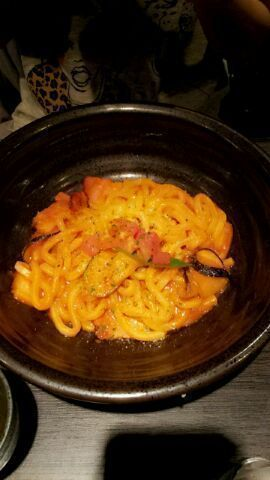

ろってぃ♪だよ。
☆乃木坂46サンタの企画☆
是非 小さなお子様を
お持ちの方々☆
応募してくださいね*^_^*
ろってぃ-さんた★
どこへでも行きますえっ !!
よろぴくね。
れいかとぉ〜 *・ゞ・))
れいか大好き。
そして,今日は
GirlsAwardのリハーサル
でしたっ !
そして、 レコーディングです*^^*
んーっ )))
今週は大変だーーーっ(>_<;
るんるん♪
... ‥
この写メ見て 笑
これお気に入りやねんなぁ〜
(・ω・)
だって見てえ,
まひろの顔
カメみたい ^ω^))
ぶっちゃいく。

そしてまたうどん。☆

せっちゃんとこないだ
ご飯行った時の
せっちゃんが頼んだ
うどん。
最近のうどんは
しゅごいでしゅねぇ〜´・ω・)))★
ってな感じで
ろってぃ-パワーぜんかいっ!!!
グハッ *∀*)!!
ほな
みなちゃま
おやすみなさい...=・ω・=
大好きだよ‥。
by rotty,